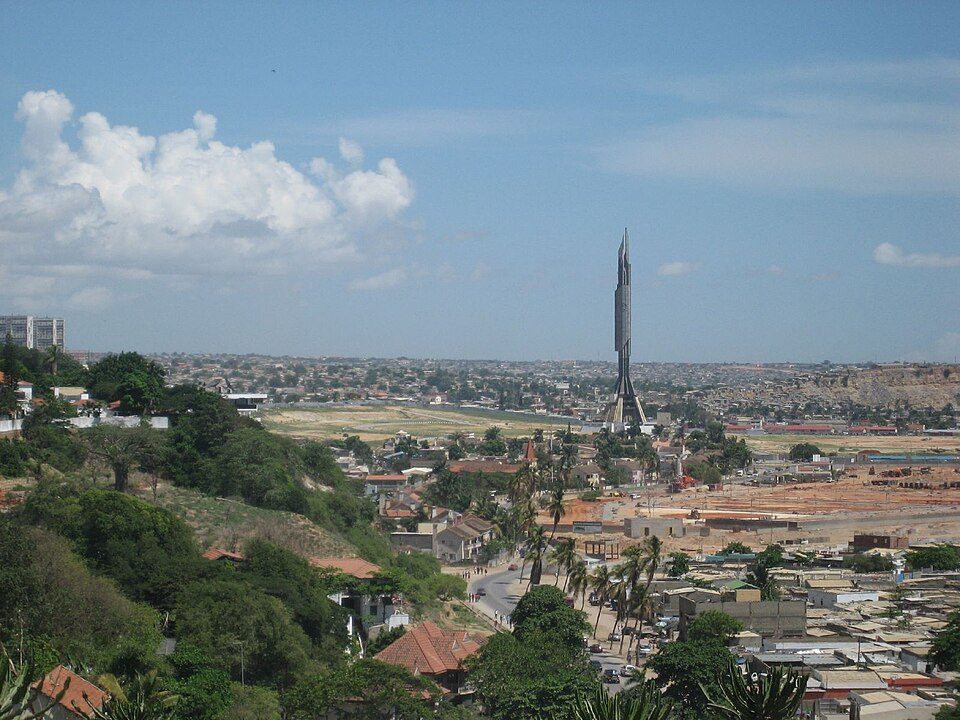

Cultura e monumentos · Praia do Bispo, Luanda
Memorial Dr. António Agostinho Neto
Monumento ao primeiro Presidente, conhecido como "Foguetão".
Monumento em homenagem ao primeiro Presidente de Angola, conhecido como "Foguetão" pela sua forma. O complexo tem museu, galeria de exposições, biblioteca e o sarcófago de Agostinho Neto. Só se pode fotografar ou filmar nas zonas autorizadas.
Informação prática
- Horário
- SegundaFechadoTerça09:00–15:00Quarta09:00–15:00Quinta09:00–15:00Sexta09:00–15:00Sábado09:00–13:00DomingoFechado
Fecha aos domingos e feriados (em alguns feriados nacionais pode abrir das 9h00 às 13h00). As visitas de grupos marcam-se com antecedência.
- Morada
- Praia do Bispo, Luanda
- Preço
- Entrada paga (valor por confirmar)
Entrada gratuita a 3 de janeiro, 18 de abril, 18 de maio, 17 de setembro e 11 de novembro.
Verificado a 11 de outubro de 2026. Fontes: Wikipedia, Decreto Executivo n.º 94/23 (regras de acesso). Confirme sempre antes de ir.
Perto daqui
- Memorial às Vítimas dos Conflitos Políticos · Museu · 0,2 km
- Hotel Baía · Alojamento · 0,5 km
- Hospital Pediátrico David Bernardino · Saúde · 1,0 km
- Hospital Josina Machel · Saúde · 1,0 km
- Palmeiras Club · Discoteca · 1,1 km
- Gems Câmbio · Câmbio · 1,2 km
Distâncias em linha reta.
Mais lugares em Luanda
- Café del Mar · Ilha de Luanda, Luanda
- O Madeirense · Liga Africana, Luanda
- Lookal Mar · Ilha de Luanda, Luanda
- Lookal Beach Club · Ilha de Luanda, Luanda
- EPIC SANA Luanda Hotel · Rua da Missão, Luanda
- Miradouro da Lua · Belas, Luanda
- NovaCâmbios · Av. Comandante Valódia, Luanda
- Fortaleza de São Miguel · Ingombota, Luanda
Memorial Dr. António Agostinho Neto — Culture and landmarks, Praia do Bispo, Luanda
Monument to the first President, nicknamed "the Rocket".
A monument to Angola's first President, known as the "Rocket" for its shape. The complex has a museum, an exhibition gallery, a library and Agostinho Neto's sarcophagus. Photos and filming are only allowed in authorised areas.
Prices in Kwanza, opening hours and directions are in the Tuende app (Portuguese and English).